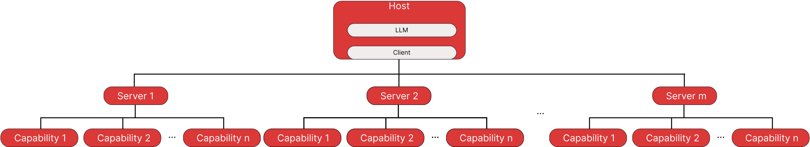

MCP#
MCP (Model Context Protocol) allows LLM to connect with external data sources, tools, and environments. This enables the seamless transfer of information and capabilities between AI systems and other digital tools. The MCP standardizes the method to interacting with LLMs, enabling tool builders to create a simple tool that can be used with any LLM.
Architecture#
The host is a final application that is given to users. It’s responsibilities are:
Managing user interactions and permissions.
Initiating connections to MCP servers via the MCP.
Organize the flow between user requests, LLM processing, and external tools.
Providing the results back to the uesr.
The client here establishes a connection with the server and communicates with it using MCP principles. Note: A single host can connect to several MCP servers, but for each it creates a new client.
The server provides the client with information about available extensions and offers a standatized way to interact with them. The things awailable to the MCP server are called capabilities.
The way components of MCP interacts with each other is represented in the following picture:

Messages#
Messages in MCP are using JSON-RPC (JSON remote procedure call). It defines the format of the messages and the channels by which the server and the host communicate. Check JSON-RPC section of the MCP hugging face cource.
Format is Json, and there are:
Three types of messages: requests, responses and notifications.
The attributes that each type of the message should have.
Host-server communication can be performed in following ways:
Standard input/ouput for a local server.
HTTP + SSE (Server-sent Events) for the remote server.
Server lifecycle inludes:
Initialization: the server and client exchange protocol version.
Discovery: The client asks the server for a list of the server’s offerings.
Execution: client uses the posibilities of the server.
Termination.
Requests#
The request to the server have following form:
{
"jsonrpc": "2.0",
"id": 1,
"method": "tools/call",
"params": {
"param1": "value1",
"param2": "value2"
}
}
The jsonrpc attribute specifies the version of the jsonrpc used.
The method specify the exact action that the host attempts to perform. The following table shows awailable methods with their descirptions.
Method |
Purpose |
|---|---|
|
Negotiate the protocol version, client/server capabilities, etc. Sets up the session. (Model Context Protocol) |
|
Request the list of tools exposed by the server. Useful for discovery. (Model Context Protocol) |
|
Invoke a specific tool, giving arguments, and receive back results. (Model Context Protocol) |
|
List available prompts (templates or structured workflows) that the server supports. (Model Context Protocol) |
|
Fetch the full detail of a specific prompt, including its arguments/messages. (Model Context Protocol) |
|
List resources (e.g. files, data sources) that the server makes available. (Model Context Protocol) |
|
Read / fetch the content of a resource identified by a URI. (Model Context Protocol) |
|
List resource templates — parameterized resource specifications (URI templates) that can be used to generate resource URIs. (Model Context Protocol) |
Capabilities#
MCP doesn’t limit the ways a host can interact with the server. However, all capabilities can be separated into a few types:
Tool: These are executable functions that the model can use to perform actions.
Resources: Read-only sources of information.
Prompt: Pre-defined prompt templates that define the way host provide the integration wiht LLM.
Sampling: Server-initiated requests for the Client/Host to perform LLM interactions, enabling recursive actions where the LLM can review generated content and make further decisions.
All together it works like this:
The users selects the prompt they want to use.
Information from resources is included to the prompt.
During processing, the LLM can invoke the tools.
For complex operations, the server may require sampling messages.
Prompts
Users of the host application usually have the option to select the promt they want to use. This allows them to define the way how the LLM will be used. Prompts are supposed to be used in cases for common workflows, specialized tasks and guided integrations.
The implementation of the prompt may look like this:
def code_review(code: str, language: str) -> list:
"""Generate a code review for the provided code snippet."""
return [
{
"role": "system",
"content": f"You are a code reviewer examining {language} code. Provide a detailed review highlighting best practices, potential issues, and suggestions for improvement."
},
{
"role": "user",
"content": f"Please review this {language} code:\n\n```{language}\n{code}\n```"
}
]
Host/client#
The host is an application that uses the MCP. A client is a specific implementation of MCP that addresses the issues to proper communication with the MCP server.
The hosts can be realized in different ways, but there are typical approach to configure the MCP on the host side. In this approach the configuratin is defined in the mcp.json file.
General structure#
The mcp.json file is the standard format for specifying the MCP client configuraiton.
The typical format of the mcp.json file looks like this:
{
"servers": [
{
"name": "Server 1",
"transport": {}
},
{
"name": "Server 2",
"transport": {}
},
...
]
}
The "servers" key specifies the list of the servers that host will consider.
Transport#
The transport key defines how the client communicates with the server.
It supports two options: stdin and http.
You specify the communication method using "type": "stdio" or "type": "sse".
This is an example of a configuration through the stdin.
{
"servers": [
{
"name": "File Explorer",
"transport": {
"type": "stdio",
"command": "python",
"args": ["/path/to/file_explorer_server.py"]
}
}
]
}
The host is configured a way will expect that the command python /path/to/file_explorer_server.py will start the server. In this case, the server is just a program that waits for requests in the form of simple stdin messages and provides responses in the same way.
Alternatively example for http configuration looks like:
{
"servers": [
{
"name": "Remote API Server",
"transport": {
"type": "sse",
"url": "https://example.com/mcp-server"
}
}
]
}